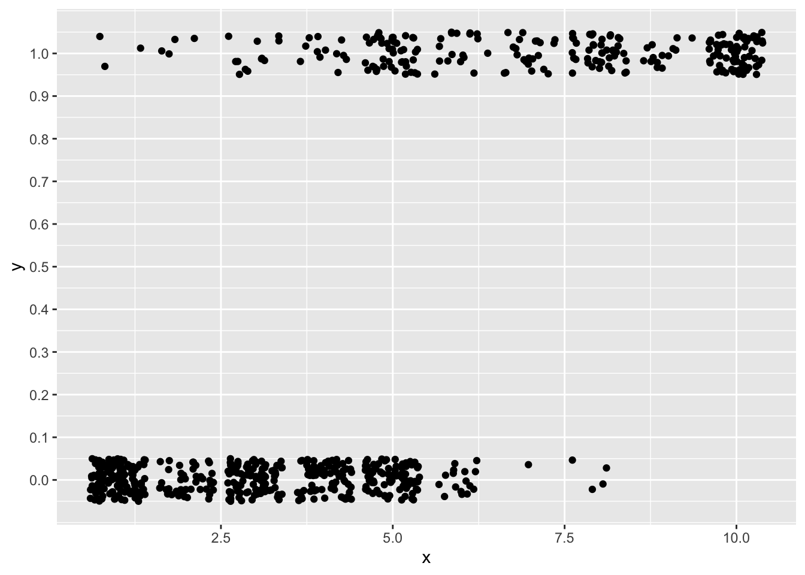
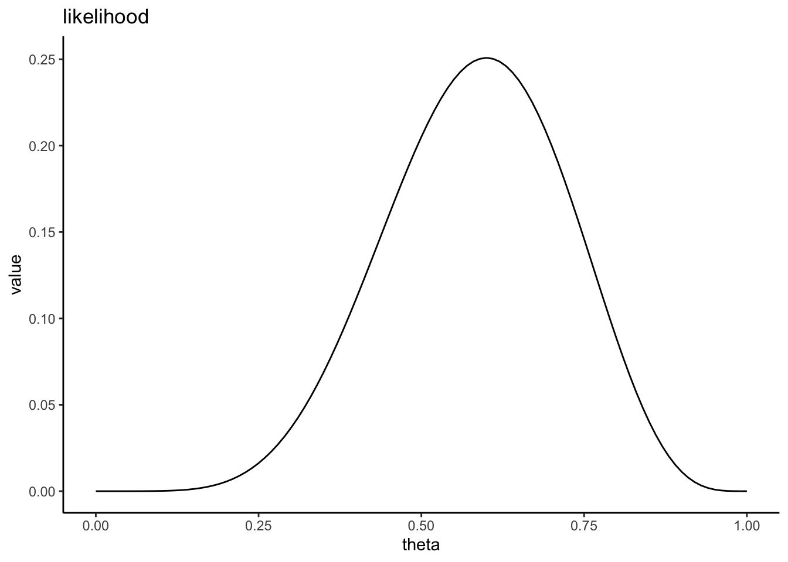
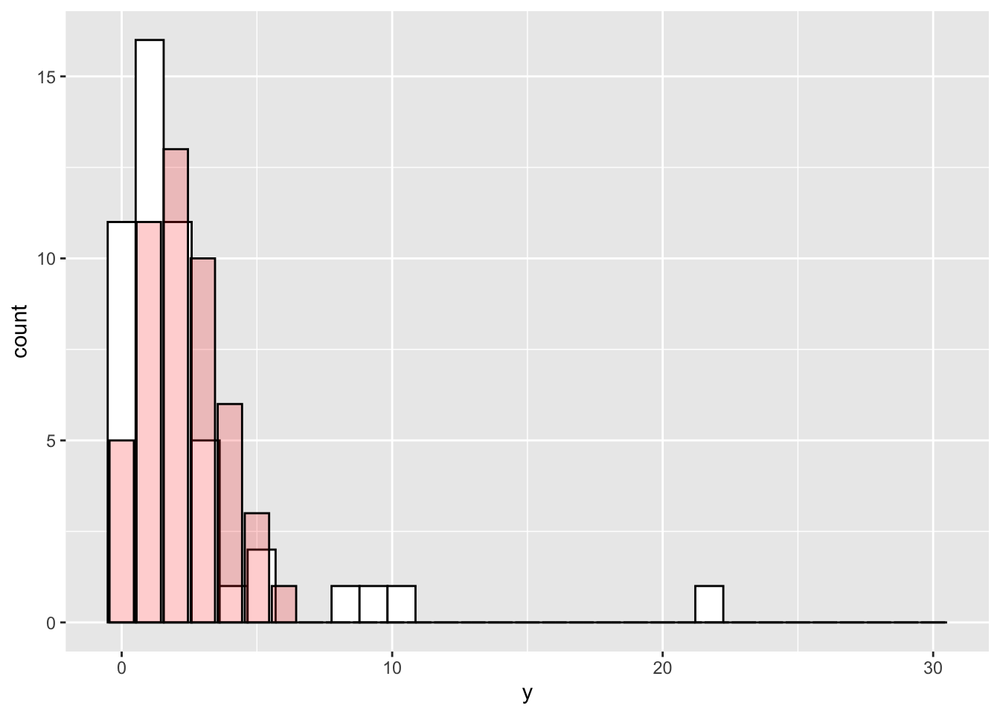
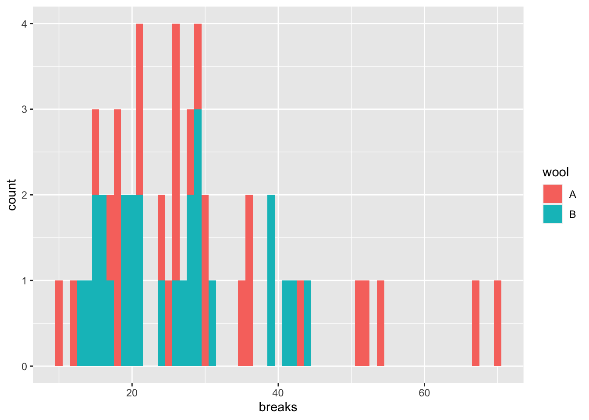

Chapter 14 一般化線形モデル（ポアソン回帰）
「一般化線形モデル」のもう一つのバリエーションである、ポアソン回帰について学ぶ。
14.2 ポアソン回帰
一般化線形モデルは、応答変数が従う確率分布として正規分布以外の確率分布も扱うモデルであった。前章では一般化線形モデルの一つとして応答変数が0か1の二値の場合、ロジスティック回帰について学んできた。
同じく応答変数の範囲に制約がある場合の例として、次は応答変数が正の値の整数しか取らない場合（0を含む）を扱う。
具体的には、応答変数がカウントデータの場合である（非負の整数。0個、1個、2個,3個といった個数など）。この場合は、ポアソン回帰と呼ばれる一般化線形モデルを扱うのが適切とされている。
サンプルデータを用いながら、ポアソン回帰について学んでいこう。以下のプログラムを実行して、サンプルデータdat_poissonを作成しよう。
set.seed(1)
N= 50
x = rnorm(n=N, mean = 2, sd=1)
lambda = exp(0.01+ 0.6*x)
y = rpois(n=N, lambda = lambda)
dat_poisson = data.frame(y=y, x=x)xとyの関係を散布図で確認してみる。

xが大きいほど、yが大きいという関係がありそうである。\(x\)から、\(y\)を予測する。
まずは、線形モデルを当てはめてみよう。
##
## Call:
## lm(formula = y ~ 1 + x, data = dat_poisson)
##
## Residuals:
## Min 1Q Median 3Q Max
## -4.0384 -1.3050 -0.0837 0.5879 8.3524
##
## Coefficients:
## Estimate Std. Error t value Pr(>|t|)
## (Intercept) -2.0977 1.0022 -2.093 0.0417 *
## x 2.9887 0.4442 6.728 1.92e-08 ***
## ---
## Signif. codes: 0 '***' 0.001 '**' 0.01 '*' 0.05 '.' 0.1 ' ' 1
##
## Residual standard error: 2.585 on 48 degrees of freedom
## Multiple R-squared: 0.4853, Adjusted R-squared: 0.4746
## F-statistic: 45.26 on 1 and 48 DF, p-value: 1.924e-08求めた傾きと切片をもとに、yを予測する直線を引いてみよう。
predict_lm = predict(model, interval = "confidence", level = 0.95) #直線の95%信頼区間を求める
dat_predict = cbind(dat_poisson, predict_lm)
ggplot2::ggplot() +
ggplot2::geom_point(data = dat_poisson, aes(x=x, y=y)) +
ggplot2::geom_line(data = dat_predict, aes(x = x, y = fit)) +
ggplot2::geom_ribbon(data = dat_predict, aes(x = x, ymax = upr, ymin = lwr), alpha = 0.5) +
ggplot2::scale_y_continuous(breaks = seq(0,20,1))
直線の左側が、0より下にはみ出てしまっている。\(y\)は正の値を取る離散値（整数）である。しかし、線形モデルで求めた直線の式ではマイナスの値も予測されてしまう。
ポアソン回帰は、この問題を解消してくれる。ポアソン回帰を数式で表すと、以下のようになる。
\[ \begin{equation} \lambda = \exp(\alpha + \beta x) \tag{4}\\ y \sim \text{Poisson}(\lambda) \end{equation} \]
14.2.1 応答変数が従う確率分布
まず、2つ目の式は、
\[ y \sim \text{Poisson}(\lambda) \]
\(\lambda\)をパラメータとするポアソン分布から、応答変数\(y\)が生成されることを示している。
例えば、以下にポアソン分布から乱数を生成するrpois()関数を使って、\(\lambda\)が3のポアソン分布から乱数を20個作ってみよう。
## [1] 3 3 2 3 3 1 3 1 2 2 2 5 3 4 5 2 1 2 4 2正の離散値（整数）が生成される。
ポアソン分布は、パラメータ\(\lambda\)を持つ確率分布である。
\[ P(y) = \frac{\lambda^y\exp(-\lambda)}{y!} \\ \]
\(y\)は0以上の整数（0, 1, 2, 3, …）、\(P(y)\)は\(y\)が生じる確率とする。
ポアソン分布のかたちを決定づけるパラメータは、\(\lambda\)のみである。\(\lambda\)は、ポアソン分布の期待値（平均）と分散の両方を意味する。つまり、ポアソン分布は平均と分散が等しい分布である。
## [1] 1 1 2 4 1 4 4 2 2 0 1 1 3 1 3 2 3 6 1 3 4 1 2 0 1 1 0 1 4 1## [1] 2## [1] 2.206897## `stat_bin()` using `bins = 30`. Pick
## better value `binwidth`.
以下に、パラメータ\(\lambda = 1\), \(\lambda = 2\), \(\lambda = 3\)それぞれの場合のポアソン分布を図で示す。

ポアソン分布は、二項分布とも関連している。
二項分布のパラメータは、試行回数\(n\)と成功確率\(p\)であった。二項分布の期待値（平均）は\(np\)、分散は\(np(1-p)\)である。
\[ y \sim \text{Binomial}(n, p) \\ E(y) = np\\ Var(y) = np(1-p)\\ \]
二項分布の試行回数\(n\)が大きく、成功確率\(p\)が小さい場合、二項分布の平均と分散はほとんど等しくなり、ポアソン分布に近似する。つまり、めったに起こらないイベントが生じる回数は、ポアソン分布に従うとされている。
14.2.2 リンク関数
線形予測子とポアソン分布のパラメータ\(\lambda\)との関係をもう一度確認しよう。
\[ \lambda = \exp(\alpha + \beta x) \\ \]
なぜ指数関数（\(\exp()\)）を用いるのか？\(z=\alpha + \beta x\)として、\(\lambda=\exp(z)\)との関係を図で見てみよう。
z = seq(-5, 5, 0.1) #-10から10まで0.1刻みのベクトルzを作成
lambda = exp(z) #上の式にzを代入して、lambdaを求める
d = data.frame(z = z, q = lambda) #グラフを作るために、データフレームを作る
ggplot2::ggplot()+
ggplot2::geom_line(data = d, aes(x=z, y=lambda))図からもわかるように、\(z\)の値に関わらず、\(\lambda\)は常に正の値を取る。ポアソン分布のパラメータ\(\lambda\)は\(\lambda>0\)という制約があるため、このような変換をする必要がある。
また、式の右辺を線形予測子にして整理すると、以下の式になる。
\[ \log\lambda_{i}=\alpha+\beta x \\ \]
つまり、ポアソン回帰では、線形予測子と応答変数をリンクさせるリンク関数として対数関数（log）を設定する。
14.3 Rでのポアソン回帰
Rでポアソン回帰をやってみよう。一般化線形モデルを扱う関数glm()で、以下のように確率分布にポアソン分布、リンク関数に対数を指定する。
なお、(link = "log")は省略しても構わない。family = poissonで確率分布をポアソン分布に指定すれば、自動でリンク関数を対数にしてくれる。
result_poisson = glm(data = dat_poisson, y ~ 1 + x, family = poisson(link = "log"))
summary(result_poisson)##
## Call:
## glm(formula = y ~ 1 + x, family = poisson(link = "log"), data = dat_poisson)
##
## Coefficients:
## Estimate Std. Error z value Pr(>|z|)
## (Intercept) -0.6829 0.2807 -2.433 0.015 *
## x 0.8951 0.1052 8.506 <2e-16 ***
## ---
## Signif. codes: 0 '***' 0.001 '**' 0.01 '*' 0.05 '.' 0.1 ' ' 1
##
## (Dispersion parameter for poisson family taken to be 1)
##
## Null deviance: 130.32 on 49 degrees of freedom
## Residual deviance: 46.52 on 48 degrees of freedom
## AIC: 197.96
##
## Number of Fisher Scoring iterations: 5推定された式が\(y\)をうまく予測できているか、図で確認してみよう。
new = data.frame(x = seq(0, 4, 0.1))
predict_glm = predict(result_poisson, newdata = new, type = "response")
dat_predict = data.frame(new, y = predict_glm)
ggplot2::ggplot() +
ggplot2::geom_point(data = dat_poisson, aes(x=x, y=y)) +
ggplot2::geom_line(data = dat_predict, aes(x = x, y = y)) 
ゼロよりも大きい値が予測されており、予測線も各データ（点）の近くに位置している。
ロジスティック回帰のときと同様に、ポアソン回帰の予測変数の傾きの値も単純に「予測変数が1単位増えたときの応答変数の変化量」を意味するわけではない点に注意が必要である。式(10)をもう一度確認すると、
\[ \log\lambda_{i}=\alpha+\beta x \\ \] であった。つまり、予測変数の傾きは「その予測変数が1単位増えたときの、応答変数（パラメータ\(\lambda\)）の対数の変化量」を意味する。しかし、これでは数値をどう解釈すればいいのか直感的に理解しにくい。
式(10)は、以下の式にも直すことができる。
\[
\begin{equation}
\lambda = \exp(\alpha + \beta x) \\
\lambda = \exp(\alpha)\exp(\beta x)\\
\end{equation}
\]
つまり、予測変数の傾きを指数関数で変換した値が、応答変数（パラメータ\(\lambda\)）の変化量を意味する。ポアソン回帰の係数を解釈する際には、係数を指数関数で変換した後の値を使う方が解釈がしやすい。
14.4 ポアソン回帰の注意点：過分散
次のプログラムを実行して、サンプルデータdat_disを作成する。
set.seed(1)
N= 50
x = rnorm(n=N, mean = 2, sd = 1)
e = rnorm(n=N, mean = 0, sd = 1)
lambda = exp(0.01 + 0.1*x + e)
y = rpois(n=N, lambda = lambda)
dat_dis = data.frame(y=y, x=x)先ほどと同様に、このデータの変数xとyを用いて、xからyを予測するポアソン回帰をやってみる。
##
## Call:
## glm(formula = y ~ 1 + x, family = poisson(link = "log"), data = dat_dis)
##
## Coefficients:
## Estimate Std. Error z value Pr(>|z|)
## (Intercept) -0.1417 0.3139 -0.451 0.65177
## x 0.4393 0.1268 3.465 0.00053 ***
## ---
## Signif. codes: 0 '***' 0.001 '**' 0.01 '*' 0.05 '.' 0.1 ' ' 1
##
## (Dispersion parameter for poisson family taken to be 1)
##
## Null deviance: 166.37 on 49 degrees of freedom
## Residual deviance: 153.39 on 48 degrees of freedom
## AIC: 260.41
##
## Number of Fisher Scoring iterations: 6xはyを予測する上で、かなり強い効果を有しているように見える。しかし、単純にそのような結論を出すことはできない。このデータでは、分散が平均よりも過剰に大きい過分散が生じているためである。
## [1] 2.32## [1] 12.875114.4.1 過分散とは？

（yのヒストグラム。白いバーが実際のyの分布、薄い赤のバーはパラメータ\(\lambda\)がyの実際の平均と等しい場合のポアソン分布）
ポアソン分布は、平均と分散が等しい分布である。しかし、現実にはデータの平均と分散が等しいケースは少ない。逆に、分散が平均よりもかなり大きいケースがよく見られる。
分散が平均よりも大きいときにポアソン回帰を使うと、分散を実際よりも小さいと推定してしまい、予測変数が平均に与える効果を過大に評価してしまう恐れがある（p値を過剰に小さく判断してしまい、第一種の過誤を犯しやすくなる。ポアソン回帰を行うとかなり低いp値が出ることが多いのは、このためである）。この問題は、過分散(overdispersion)と呼ばれる。
14.5 過分散への対処法
ポアソン回帰で過分散が疑われる場合、対処法としては例えば以下の方法がある。
- 応答変数が従う確率分布として、負の二項分布を用いたモデルで分析する。
- 一般化線形混合モデルで、個体差を意味するパラメータを追加したモデルを用いる（分散を個体差パラメータに吸収させる）。
対処法1については、次の章で解説する（対処法2については、「マルチレベルモデル」の章で説明する）。
14.7 確認問題
以下のプログラムを実行し、サンプルデータを作成する。
変数の意味は以下の通りである。
Birds: その日に観測した鳥の数
Temp: 気温（摂氏）
Cloud: 天気（0 = 晴れ, 1 = くもり）
Humid: 湿度（%）
Birds = c(2, 9, 8, 3, 6, 6, 5, 5, 7, 2, 9, 3, 13, 5, 7, 5, 5, 10, 10, 13)
Temp = c(23.8, 25.3, 26.1, 22.7, 25.4, 25.5, 24.4, 24.5,
24.4, 24.1, 24.5, 24.0, 24.2, 25.1, 26.0, 24.9,
24.5, 24.1, 24.2, 27.4)
Cloud = c(1, 0, 0, 1, 0, 1, 0, 0, 0, 1, 0, 1, 0, 0, 0, 1, 0, 0, 0, 1)
Humid = c(50.3, 49.0, 49.1, 50.9, 48.6, 47.1, 51.1, 48.0, 50.0,
48.1, 52.2, 49.0, 48.6, 49.0, 46.7, 47.7, 45.6, 47.3,
49.4, 49.1)
data_q02 = data.frame(Birds = Birds,
Temp = Temp,
Cloud = Cloud,
Humid = Humid)Birdsを応答変数、Temp、Cloud、Humidの3つを予測変数としたポアソン回帰を行い、それぞれの予測変数の係数について報告せよ。また、5%水準で有意な効果を持っていた予測変数を報告せよ。